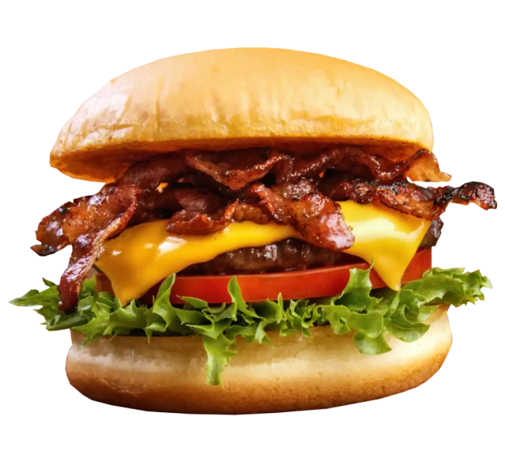

HOME
CARDÁPIO
CONTATO
×
HOME
CARDÁPIO
CONTATO
Tel: 98 9 9999-9999
Tel: 98 9 9999-9999
BURGUER 1
‹
›

SEU BURGUER CASEIRO
Clique em nosso cardápio no menu para mais informações
IR PARA CARDÁPIO
*Imagem meramente ilustrativa